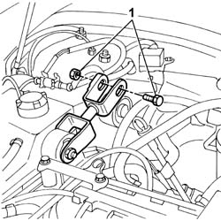
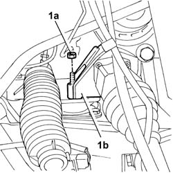
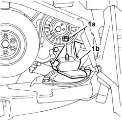
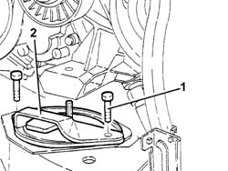

1008B10 FLEXIBLE MOUNTING for power unit front support (timing side) - Replace
- Path
- Procedures > 10 ENGINE > 1008 POWER UNIT SUPPORTS > 1008B power unit mounting blocks > 1008B10 FLEXIBLE MOUNTING for power unit front support (timing side) - Replace
- Kind
- repair procedure (removal / refitting; the operation number is the code)
- Applies to
- engines: 2.4 JTD 10V; all production periods
- Interactive page
- https://sloeber94.github.io/elrnDB-lThss/en/#/75472
Applies to: engines: 2.4 JTD 10V; all production periods
 Removing
Removing
 Refitting
Refitting- Position the vehicle on a lift.
- Open the boot and disconnect the negative battery terminal.
See in Op. 7040D50 ENGINE COMPARTMENT UPPER SOUND INSULATION SHIELD - R.R.
See in Op. 7055B54 PROTECTION/GUARD under engine - R.R.
See in Op. 4450B04 Right FRONT WHEEL (one) - R.R.
-
See in Op. 7055B42 FRONT WHEEL ARCH LINER (one), left or right - R.R.
See in Op. 7055B64 Engine compartment DUST SEAL in front wheel arch (one), left or right - R.R.
See in Op. 1016A10 SOUND-PROOFING COVER - R.R.
1. Undo the bolt fixing the reaction rod to the bodyshell.

Applies to: engines: 2.4 JTD 10V; all production periods
- Position a hydraulic lift under the sump in order to work safely.
1. Undo the nut (1a) fixing the rigid rear support (1b) to the mounting.

Applies to: engines: 2.4 JTD 10V; all production periods
1. Undo the nut (1a) fixing the compressor/engine support (1b) to the flexible mounting.

Applies to: engines: 2.4 JTD 10V; all production periods
1. Undo the fixing bolts.
- Using the hydraulic lift, slightly raise the engine until the support slips away from the flexible mounting stud.
2. Remove the flexible mounting from the housing in the crossmember.

Applies to: engines: 2.4 JTD 10V; all production periods
Refitting
Removing- Fit the flexible mounting in the special housing in the crossmember.
- Tighten the bolts fixing the flexible mounting to the chassis to torque.
 | Value - daNm | Fastening | Component | Ø |
|---|---|---|---|---|
. | 5 | Bolt | FRONT FLEXIBLE MOUNTING BLOCKS, POWER UNIT | M10 X 25 |
- Tighten the nut fixing the support to the flexible mounting to the engine support to torque.
| Value - daNm | Fastening | Component | Ø |
|---|---|---|---|---|
. | 5 | Nut | RIGID TIMING SUPPORT POWER UNIT | M10X1.25 |
- Tighten the nut fixing the engine support/intermediate shaft to the flexible mounting to torque.
| Value - daNm | Fastening | Component | Ø |
|---|---|---|---|---|
. | 5 | Nut | RIGID REAR SUPPORT POWER UNIT | M10 X 1.25 |
- Remove the hydraulic lift from under the sump.
- Tighten the bolt fixing the reaction rod to the bodyshell to torque.
| Value - daNm | Fastening | Component | Ø |
|---|---|---|---|---|
. | (body) 3 | Bolt | POWER UNIT REACTION ROD | M8 |
See in Op. 1016A10 SOUND-PROOFING COVER - R.R.
See in Op. 7055B64 Engine compartment DUST SEAL in front wheel arch (one), left or right - R.R.
See in Op. 7055B42 FRONT WHEEL ARCH LINER (one), left or right - R.R.
See in Op. 4450B04 Right FRONT WHEEL (one) - R.R.
-
See in Op. 7055B54 PROTECTION/GUARD under engine - R.R.
See in Op. 7040D50 ENGINE COMPARTMENT UPPER SOUND INSULATION SHIELD - R.R.
- Connect the negative battery terminal.
- Remove the vehicle from the lift.
Topics linked from this page (6)
- 1016A10 SOUND-PROOFING COVER - R.R.
- 4450B04 Right FRONT WHEEL (one) - R.R.
- 7040D50 ENGINE COMPARTMENT UPPER SOUND INSULATION SHIELD - R.R.
- 7055B42 FRONT WHEEL ARCH LINER (one), left or right - R.R.
- 7055B54 PROTECTION/GUARD under engine - R.R.
- 7055B64 Engine compartment DUST SEAL in front wheel arch (one), left or right - R.R.